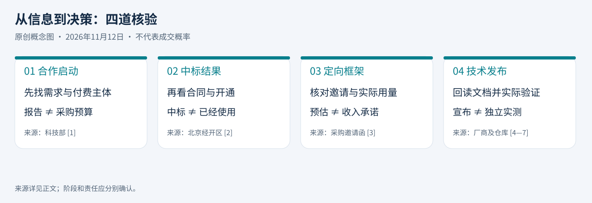

本期范围与证据口径
北京时间2026年11月12日。实际检索截止：08:49:30（UTC 00:49:30）。优先覆盖11月11日08:49:30至11月12日08:49:30；扩展覆盖11月9日08:49:30至11月12日08:49:30。共5条，3条中国大陆、2条全球动态。只有日期、没有时分的来源按72小时扩展保守标注。
已回看最近7天站内高管简报及今日独立AI日报。以下选题均未在这些简报中重复刊发；今日AI日报的Databricks、Google Decisions、ElevenLabs、Qwen4和Grok条目保持原样。本期不以旧文新转发充当新事件。
“摘要”为来源事实或有明确归属的厂商表述；“为什么重要”“业务影响”“建议”为编辑分析。公告、中标、合同、开通和收入是不同阶段。全部正文依据公开信息，不使用第三方照片；信息图为原创概念图，不是统计或预测。
先判断阶段，再判断机会
原创编辑图解｜根据本期公开来源整理，不是金额排名或成交概率。
- 武汉 · 合作启动
找场景与机制
报告发布，不等于预算、采购或订单。
- 北京 · 已中标
看交付与责任
中标结果，不等于合同签署或服务开通。
- 广东 · 定向采购
辨入口与用量
指定邀请、框架数量，不是公众投标或收入承诺。
01｜湖北：中非科技合作启动新行动，AI场景报告在武汉发布
事件及新增信息：11月11日；科技部首次发布：11月11日17:35（北京时间）。时效：过去24小时。
摘要： 2026中非创新合作与发展论坛在武汉开幕，启动“中非科技伙伴计划提升行动（2026—2030）”，并发布《面向非洲国家的人工智能典型应用场景》等报告。活动覆盖产业、教育、数智和民生等板块。当前可确认的是行动启动与报告发布，所读公告未附具体AI项目预算、采购安排或报告全文。[1]
为什么重要： 这是面向非洲的技术合作与场景交流入口，适合观察中国AI能力如何适配不同市场，而不是直接推算出口收入。
业务影响： 潜在机会需要经过当地需求、语言与数据、付费主体、合作伙伴及持续交付条件筛选；活动规模不能代替商业可行性。
建议： 待场景报告和后续对接机制公开后，先筛选能明确用户、采购方和交付责任的少量场景，不据此承诺当地订单。
证据与限制： 已直接读取科技部完整HTML公告；未取得报告全文、预算或项目清单，不对报告具体场景作推测。[1]
02｜北京：1044万元政务算力租赁中标，交付标准不止GPU
事件及新增公告：11月10日；首次发布：11月10日17:14（北京时间）。时效：72小时扩展，非今日新招标。
摘要： 北京经开区政务应用算力租用服务（二次）公布中标结果，北京国际算力服务有限公司中标1044万元。服务包含不少于80P（FP16）算力及存储、网络、安全和稳定运行配套；合同签订后30日内完成联调并申请开通，经采购方确认后服务一年。中标公告并未证明合同已签或服务已开通。[2]
为什么重要： 该项目体现的是带运行保障的组合服务采购，不能只按名义算力理解其竞争条件。
业务影响： 可用于研究政务算力租赁的服务边界与履约节奏，但不是新的可投标窗口；1044万元也不能简单除以80P得到通用GPU租赁价格。
建议： 对同类项目同时核算存储、网络、安全、运维、联调和一年服务成本，分别设置中标、合同、开通、验收节点。
证据与限制： 已读经开区官网公告正文；未读取招标附件或签署合同，芯片型号、详细性能与付款条件不作推断。[2]
03｜广东：南航按机柜与电力采购，框架数量不是收入承诺
新增采购公告及首次发布：11月11日，原页未列时分。时效：保守纳入72小时扩展。
摘要： 南航数智科技（广东）有限公司发布算力中心建设直接采购邀请函，邀请中国电信广州分公司报价，服务期两年。范围包括机房机柜、配套基础设施、裸纤、网络、运维与电力，预估机柜2380个·月、电力800万千瓦时。公告采用无固定总金额的框架模式，明确预估数量不构成必然采购承诺。[3]
为什么重要： “算力中心建设”标题不等于采购GPU或大模型。此次公开需求主要是场地、电力及连接等基础设施服务。
业务影响： 这不是面向所有供应商的公开招标机会；机柜与用电数量也不能据此推算AI负载规模、合同收入或项目利润。
建议： 把该项目作为央国企基础设施采购模式信号，研究固定单价、实际用量结算和两年运维责任，而非加入可直接投标清单。
证据与限制： 已通过公开HTTP读取广东省机电设备招标中心原始邀请函全文；搜索阅读器未成功打开。正文金额栏为空，未刊采购总额，也未读取须登录获取的采购文件。公告写明报价截至11月25日13:30，并要求以南航平台时间为准；本期不把该期限转述为公众投标入口。[3]

04｜全球云竞争：CoreWeave补上托管数据库，向AI应用平台延伸
产品宣布及官方博客发布日期：11月11日，页面未列时区和时分。时效：保守纳入72小时扩展；技术文档标注最后修改9月30日，不算新增事件。
摘要： CoreWeave宣布其托管PostgreSQL服务正式开放，可在客户CKS集群CPU节点运行，并提供备份、故障切换等托管能力。官方将Agent状态和AI应用数据列为用途。需注意：所读技术文档仍写“限量开放”、按集群启用，实际可用范围与开通条件应向供应商确认，不能仅按新闻稿推定全部客户已可使用。[4][5]
为什么重要： 智算云竞争正在涉及应用运行依赖的数据服务，而不只是GPU资源。本次产品动作支持这一观察，但不能代表整个市场已经完成转型。
业务影响： 国内云服务商可据此检查数据库、备份与恢复等配套能力；同集群部署是否降低总成本和故障风险，仍取决于架构与运维，尚无独立对照结果。
建议： 对照既有AI资源池列出应用状态存储、恢复与责任分工的缺口，先验证客户需求和运营成本，不因竞品发布就扩大产品线。
证据与限制： 已直接读取官方博客和技术文档，明确披露开放状态不一致；未实测产品、价格、SLA或中国市场可用性。厂商关于易迁移和效益的表述不视为独立验证。[4][5]
05｜Agent工程：AWS发布本地模拟器，重点是可检验的任务边界
产品发布及官方文章日期：11月11日，页面未列时区和时分。时效：保守纳入72小时扩展。仓库为本次读取时的公开状态，不以提交数量推算开发效率。
摘要： AWS发布用于本地开发测试的AWS Emulator，并自述其代码由自主Agent生成。工程文章介绍了测试、查错、修复三组Agent及合并前检查，以API规格和真实AWS行为为参照。公开仓库明确工具不用于生产负载或安全测试；“全由Agent编写”是厂商工程说明，不等于经过独立审计的可靠性结论。[6][7]
为什么重要： 值得借鉴的是可执行规范、参照系统和回归检查，而不是将“代码生成自动化”直接等同于“工程责任消失”。
业务影响： 企业可在低风险开发测试中评估类似方法，但模拟器覆盖差异仍需验证，不能替代真实云环境验收，更不能直接套用于高风险生产系统。
建议： 先选接口明确、能自动判断结果的小范围任务，对照人工基线记录缺陷、返工和总成本；评估工具前检查默认遥测及本地数据要求。
证据与限制： 已读取Amazon官方工程文章和AWS官方仓库README；未运行工具或独立复现。仓库说明遥测默认开启且可关闭，许可证以仓库文件为准。未发布未经实测的成本下降或生产率百分比。[6][7]
存量事项
昨天已报道的国开行智算二次采购、南网AI服务器批次仍有后续文件获取和投标节点。本期不重复计为新要闻，也未重新核验澄清或延期；如拟参与，应在原平台复核，而不是直接沿用旧期限。[8]
今日判断
国内三条信息分别处于合作启动、中标和定向采购阶段，管理层应先判断事项状态与自身能否参与，再估算业务空间。算力服务的成本和竞争条件不仅在芯片，也在存储、网络、电力和运行保障。CoreWeave的产品动作提示智算云可能向应用配套服务延伸，但新增产品线仍须验证客户需求和运营经济性。AWS案例说明，Agent工程应重视可检验规范和回归检查，厂商自述的自动化程度不能替代独立验收。